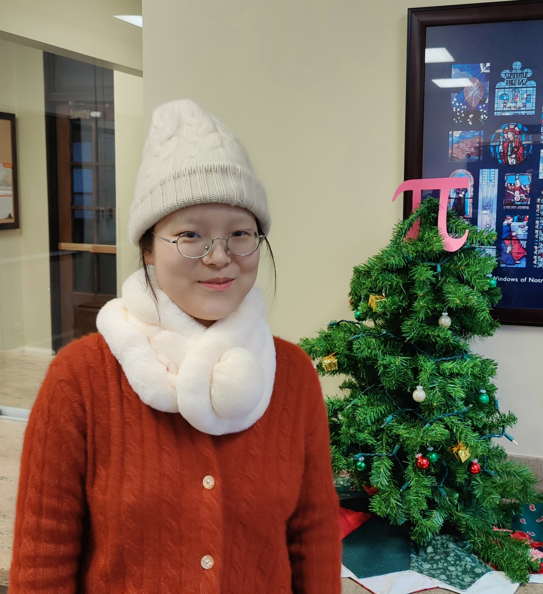

Xiyan Zhong (钟希妍)
I am a fourth-year graduate student in the Department of Mathematics at the University of Notre Dame. My advisor is Andrew Putman.
Contact Information:
Email: xzhong4 [at] nd [dot] edu
Office: B02 Hayes-Healy
Research Interest:
I am mainly interested in geometric group theory, especially mapping class groups.
Papers/Preprints:
Prym Representations and Twisted Cohomology of the Mapping Class Group with Level Structures
Education:
Summer Project in 2019 :
Visited Prof. Justin Malestein at the University of Oklahoma and computed the image of the Johnson homomorphism for all compact surfaces (Report)
Seminars:
Conferences Attended:
Teaching Experience:
- Fall 2023: Instructor, Calculus A (Math 10350)
- Spring 2023: Teaching Assistant, Calculus III (Math 20550)
- Fall 2022: Teaching Assistant, Calculus II (Math 10560)
- Spring 2022: Teaching Assistant, Calculus III (Math 20550)
- Fall 2021: Teaching Assistant, Calculus A (Math 10350)
- Spring 2020: Teaching Assistant, Mathematical Analysis II for College of Engineering at Peking University
- Fall 2019: Teaching Assistant, Mathematical Analysis I for College of Engineering at Peking University